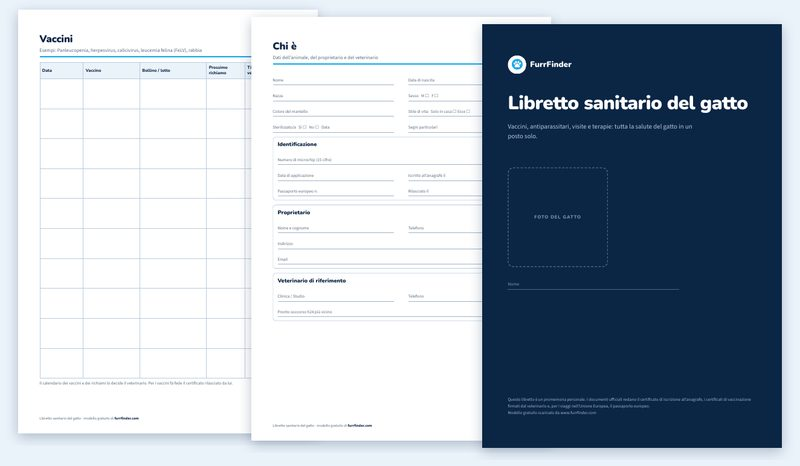

Libretto sanitario del cane
PDF, 8 pagine A4. Vaccini: cimurro, epatite, parvovirosi, leptospirosi, tosse dei canili, rabbia. Antiparassitari compresa la filaria.
Un libretto sanitario pronto da stampare, con le pagine per anagrafica e microchip, vaccinazioni, antiparassitari, visite e terapie. Gratis, in formato A4, senza registrazione.
PDF, 8 pagine A4. Vaccini: cimurro, epatite, parvovirosi, leptospirosi, tosse dei canili, rabbia. Antiparassitari compresa la filaria.

PDF, 8 pagine A4. Vaccini: panleucopenia, herpesvirus, calicivirus, leucemia felina, rabbia. Con lo spazio per indicare se il gatto esce o vive in casa.
| Pagina | Cosa ci scrivi |
|---|---|
| Copertina | Foto e nome del tuo animale |
| Anagrafica | Razza, data di nascita, sesso, sterilizzazione, microchip, iscrizione all’anagrafe, passaporto, proprietario e veterinario |
| Vaccinazioni (2 pagine) | Data, vaccino, bollino o lotto, prossimo richiamo, timbro e firma del veterinario |
| Antiparassitari | Prodotto, contro cosa (pulci, zecche, vermi, filaria), prossimo trattamento, peso |
| Visite e controlli | Motivo, peso, esito degli esami, veterinario |
| Terapie e interventi | Farmaci, dosi, durata; allergie e intolleranze |
| Se si perde | Cosa fare subito, a chi comunicarlo |
Attenzione: il libretto stampato è un promemoria personale. I documenti ufficiali restano il certificato di iscrizione all’anagrafe, i certificati di vaccinazione firmati dal veterinario e, per viaggiare nell’Unione Europea, il passaporto europeo.
Lo stesso libretto lo puoi avere gratis anche sul telefono, con FurrFinder. In più ricevi la notifica quando arriva il richiamo, conservi referti e certificati in PDF e, se il tuo veterinario usa Vetroom, visite e vaccini arrivano da soli.
Il libretto digitale è gratis, con il tuo account Google. Pronto in un minuto, non si perde mai.
No. È un promemoria personale per tenere in ordine la salute del tuo animale. I documenti ufficiali restano il certificato di iscrizione all’anagrafe, i certificati di vaccinazione firmati dal veterinario e il passaporto europeo per i viaggi. Puoi però chiedere al veterinario di attaccare il bollino e firmare nella pagina dei vaccini.
Sì: ci sono due pagine dedicate ai vaccini, con spazio per il bollino, la data del prossimo richiamo e il timbro del veterinario.
Scarica il PDF e stampalo su fogli A4, anche fronte e retro. Puoi pinzarlo a metà o tenerlo in una cartellina insieme ai certificati del veterinario.
No. Il PDF è gratuito e si scarica senza registrazione. Se vuoi lo stesso libretto anche sul telefono, con i promemoria dei richiami, puoi creare gratis il libretto digitale di FurrFinder.
Quando vaccinare il cucciolo e ogni quanto fare i richiami.
Gattino, gatto di casa e leucemia felina: cosa serve e quando.
Certificati, date e richiami da avere sempre pronti.
Le informazioni su questa pagina sono informative e non sostituiscono il veterinario.